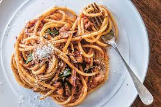

Description
Steps
-
Fill a large pot with lightly salted water and bring to a rolling boil.
Stir in bucatini and return to a boil.
Cook, uncovered, stirring occasionally, until bucatini is tender, about 11 minutes. Drain.
-
Heat oil in a large skillet over medium-high heat. Add garlic cloves; cook until golden brown, about 1 minute.
Remove with a slotted spoon and discard. Add guanciale; cook and stir until crisp and golden, about 4 minutes.
Add onion and red pepper flakes; cook and stir until onion is translucent, about 3 minutes.
Stir in tomatoes, salt, and black pepper.
Simmer tomato sauce until flavors combine, about 10 minutes.
-
Stir bucatini and Pecorino Romano cheese into tomato sauce and toss until evenly coated.